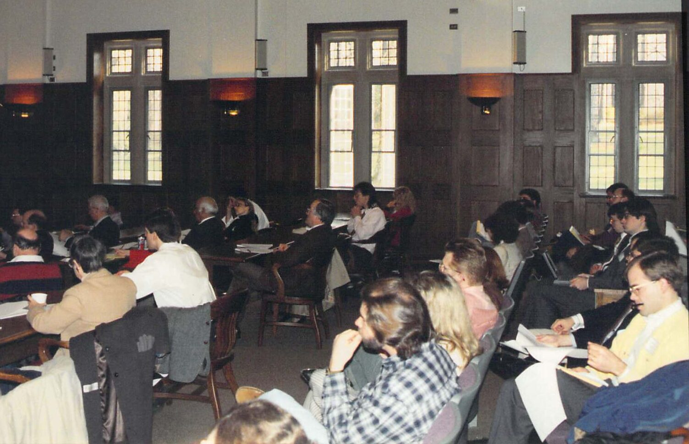
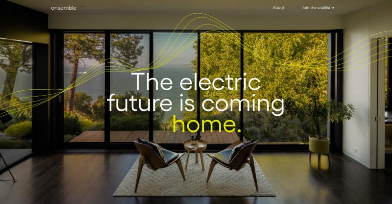
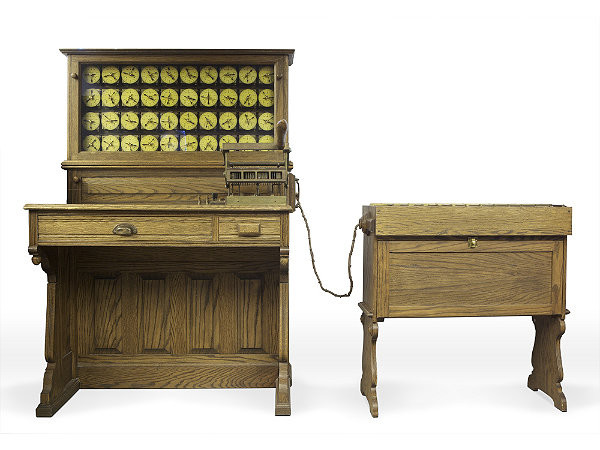

-
Community in Cyberspace, 29 years later

A couple weeks back, I returned to my law school alma mater to celebrate the 30th issue of the law journal I co-founded, the Richmond Journal of Law & Technology. (The law school recorded an interview with me while I was on campus; that video is at the bottom of the post if you’re interested.)
At the reception for JOLT that evening, Prof. Cotropia asked me about our first issue, published in April, 1995. “Didn’t Dan Burk publish in that issue?” I said he had; Prof. Cotropia asked a follow-up: “Didn’t Dan speak at the symposium you held earlier that year?”Though I didn’t know why he was asking, I said that yes, Dan was one of the keynote presenters at that event. A group of us had organized a ~day-long symposium to explore what were, at the time, novel questions: was it possible that “cyberspace” could be said to be a “community”? What would the legal implications be if “cyberspace” was somehow different from the community we lived in?
It’s hard, in 2024, to remember just how weird these questions were to people who were not spending most of their waking hours online. (At the time of the symposium, there were just 40M people worldwide who had access to the Internet, or less than 1% of the world’s population. Today, that number is 5.2B people, or ~65% of the world’s population.)
The symposium served two purposes, as I (vaguely) recall: a group of us were genuinely interested in the legal questions, and saw an event as a way not only to convene people we admired, but to network. We were, after all, law students, who’d eventually need jobs.
And we offered to our speakers that if they were amenable, we could publish their presentations in JOLT’s first issue later that spring. We needed to demonstrate that the Journal would be a legitimate home for true scholarship, and getting established experts to commit to publishing with us was not exactly easy. (Would tenure committees even consider an article published in a digital journal as “real” scholarship? At the time, we had no idea.)
All of which is to say: we needed some people to gamble on us. And two people who did – who both published in JOLT’s first issue, and who presented at the symposium we held in February, 1995 – were Prof. Trotter Hardy at William & Mary, and Dan Burk, who at the time was at George Mason Law School.
Back to Prof. Cotropia: he was asking about Dan because earlier this month, Dan tragically passed away. He wondered whether I might have a recording of that symposium – if I did, he wanted to share it with Dan’s family and colleagues.
I vaguely recalled that at some point, I did have a VHS tape (!) of the symposium, that followed me from home to home as we moved jobs. When I got home, I looked around, and realized that I’d actually sent the VHS tape to a service to transfer it to several DVDs (6h of recording in all), and then completely forgotten about it. Spurred by Prof. Cotropia’s request, I ripped those DVDs and uploaded them to YouTube over the weekend.
While it’s wild to see 23 year-old me on video after nearly 30 years, I nevertheless was thrilled to put these videos online where they can be shared more broadly. Dan was ahead of his time – asking questions in 1995 that were years ahead of when most others in the profession were. That he would go on to, in the words of UCI’s memoriam linked above, “leav[e] behind a profound and worldwide legacy on issues related to high technology, including the areas of patent, copyright, electronic commerce, and biotechnology law” is hardly surprising when you listen to how thoughtful he was back then. I’m forever grateful to Dan (and the other speakers) that they took time out of their schedules and took a risk on us – without their contributions, we might never have been able to get JOLT off the ground. I was so sorry to learn of his passing, at such a young age.
With that, I present to you the recording of the February 4, 1995 symposium held by the Richmond Law & Technology Association, “Community in Cyberspace: The emerging law of technology”:
Part 1:
Part 2:
Part 3:
I also found a scanned copy of the program from the event, which I’m including below:
Miraculously, I even have some (grainy, blurry, sigh) photos from the event:
And last but not least, here’s that interview I recorded while on campus a couple weeks ago:
-
Explaining climate-friendly incentives isn’t enough
Last week’s Washington Post is a great example of how hard the current landscape is to navigate for climate-conscious consumers.
In the article, the author lays out a number of rebates and tax credits available to consumers today – whether buying an electric vehicle, upgrading to a heat pump, installing solar panels, or adding battery storage, among others.
But as you read the article, one thing becomes abundantly clear: out of all of the things you could do, it’s maddeningly hard to know what you should do, let alone when. And what’s worse, the article focuses exclusively on federal incentives that will be available in 2024 from the Inflation Reduction Act – which is great, don’t get me wrong. (Seriously! The IRA is a great piece of legislation that will do a lot of good.) But many of those incentives don’t exist today, and won’t for at least several more months.
What the article fails to mention is that in some areas – like here in California – there are already substantial incentives that can be claimed today. A casual reader of last week’s Washington Post article would have no reason to think that there might be other avenues to pursue, and would consequently miss out on thousands of dollars of savings when upgrading their existing water heater (among other upgrades). Since these projects will likely take years for most homeowners to tackle over time, it’s critical that homeowners have complete, and actionable info.
This is the problem we set out to solve at Onsemble. Well-articulated incentive models are crucial, but they can sometimes lead us astray. The focus tends to shift towards the intricacies of the wording, the structure of the incentives, rather than the actual outcomes we desperately seek. Our launch last week is the first step towards a simpler approach for homeowners: instead of reading a 1200 word article laying out all the possibilities, we give you an answer, and connect you with someone who can do the work – right away, saving you thousands of dollars, not to mention hours of your time. -
Announcing Onsemble

(I haven’t posted here in ages; now I can share why. Expect to see more regular posts here in the months ahead. -Rick)
Earlier this year, I co-founded a startup with Julia Yrani to help save the planet. We recently took the wraps off what we’ve been up to:
We first met when I was at Google Ventures and Julia was at portfolio company Synack; we re-connected last fall, and within days, I knew I’d found a partner I wanted to build a company with.
As California’s Chief Technology Innovation Officer, I saw first-hand how technology, innovation, and collaboration between public and private sectors could create a better, safer world for all. With Onsemble, Julia and I are taking on an even more important challenge: the climate crisis.
20% of US greenhouse gas emissions come from homes. That’s more than passenger vehicles! Most of that is from appliances burning fossil fuels to create heat: water heaters and furnaces. Fortunately, there’s a simple answer to decarbonizing homes: upgrading to heat pumps.
But the upgrade process today is anything but simple. Onsemble is an easy button for the hard parts of decarbonizing your home: an app that helps you seamlessly navigate the incentive and contractor landscape, and replaces your gas burning appliances with the efficient alternative. Be sure to join the waitlist and be notified when we launch in your area.
Julia and I are thrilled to partner with our investors Union Labs, Third Sphere, K9 Ventures, Cleo Capital, and Incite, along with angel investors Lindsay Aranoff, Summer Bundy, Matt Cutts, Joe Greenstein, Bradley Horowitz, Darlene Jacobs, Ken Norton, Mekka Okereke, Andy Palmer, Rachel Sheinbein, Dan Shapiro, and Jeff Ullrich. Together, they’ve given us the opportunity to build a world-class team from day one.
In the weeks ahead, we’ll be sharing more about our solution to this problem, our team, and how you can join us on the journey to decarbonize homes in America. -
The first big data contest in the US: the 1890 Census

(Each week, I write a post about OKRs. You can see the series of posts here; if you have a question about OKRs you’d like to see me cover down the road, drop me a line.)
(This essay is a reprint of an essay based on my keynote talk at Techstars FounderCon 2016. I’m reprinting it today to coincide with the release of the podcast episode The History of Surveys, in which I share some of Herman Hollerith’s story with host Liam Geraghty.)
The United States Census of 1880 came at a pivotal time in U.S. history. It was the last time the Census Office could identify anything resembling a U.S. frontier; for the first time, just half of the country worked in agriculture. The census itself had grown so large that the government was collecting more data than it could tabulate — it took a full eight years and thousands of people to produce the twenty-three volumes containing their analysis. At that rate, it was entirely likely that the 1900 Census would start before the 1890 Census results would be completed.
Herman Hollerith. Source: United States Library of Congress‘s Prints and Photographs division. Bell, C. M. (Charles Milton), ca. 1849-1893, photographer. Public Domain. Enter Herman Hollerith. A teen graduate of the Columbia School of Mines, Hollerith’s first job out of college was in the Census Office in 1880. He’d seen first-hand the challenges they’d faced, experienced the frustration of knowing the information was contained in the voluminous records gathered by the census takers, unable to extract it. After just two years, he left to take a Mechanical Engineering professorship at MIT. He was 22.
Hollerith had been experimenting with punch cards as a storage medium; by 1888 he’d expanded on the idea by creating a corresponding machine to electrically tabulate the stored data. The idea of using punch cards to store information was not new — the Jacquard Loom, invented 80 years prior, used punch cards to store complex designs for textiles.
But the counting of the stored data? That was new. And Hollerith thought it might be an advantage.
In 1888, the Census Office — years late and over-budget with the 1880 census — decided to hold a contest to solve the country’s first “big data” problem. They needed more (and better) information about the growth of the country and they needed the information faster. The contest had two components: 1) data capture and 2) data tabulation.
Three people entered the contest. The third place submission captured the data in 145 hours. Hollerith’s machine captured the data in half the time. The third place submission tabulated the data in just over 55 hours. Hollerith’s machine needed just 5.5 hours, a 10X improvement. Hollerith had his first customer.
Hollerith Machine. Source: Computer History Museum. Hollerith’s machines were exactly what the Census Office had hoped for: the population count was completed in months, not years. The entire census — including analysis, demographic and economic data — finished in less time, contained 40% more information than the 1880 Census, and saved the U.S. government $5M. Flush with his success in the U.S., Hollerith founded the Tabulating Machine Company, and went on to capture and tabulate data for governments in Russia, Austria, France, Norway, Cuba, Canada, and the Philippines.
There was just one problem: the Hollerith Machine produced data so quickly that many refused to accept the results initially. “Useless machines!” declared the Boston Herald. Local U.S. politicians — who wanted more federal money — refused to accept the lower-than-expected population counts. The New York Herald complained: “Slip shod [sic] work has ruined the Census.”
Far from ruining the Census, the Tabulating Machine Company was re-hired for the 1900 Census, and grew from those origins into other data-intensive industries. Later customers included the railroads, insurance companies, steel manufacturers, and the US Post Office. After a decade of steady (but slow) growth, The Tabulating Machine Company was one of four companies that merged to form a new company that went by the awkward name “Computing Tabulating Recording Company”, popularly referred to by its acronym, CTR. The Tabulating Machine Company was valued at $2.3M ($55M in today’s dollars); one of the other company’s CEOs led the combined entity and Hollerith eventually scaled back.
Three years later, CTR hired a new GM, a star salesman from National Cash Register who’d been fired along with 29 former NCR employees. Less than a year later, that GM became the CEO of CTR.
By 1924, that former NCR salesman shed the clunky acronym and renamed the company.
The salesman’s name? Thomas Watson.
The new name? International Business Machines.
Hollerith’s punch cards — and the methods to analyze the data they contained — ended up in use for nearly a century, and formed the foundation of the entire computing industry.
By any objective measure, Hollerith’s success — culminating in the CTR merger that made Hollerith a millionaire — was enviable. But once you know that his company became the foundation on which IBM was built — you can’t help but wonder if Hollerith’s tale is, in its own way, a cautionary tale. More than just a good idea, it’s not enough to have a good product — you need to have a good company too. It took Thomas Watson’s disciplined leadership over decades at the helm of IBM for CTR to become the IBM we know today.
At GV, I have the privilege of working with hundreds of entrepreneurs who are working hard to turn their own great ideas into great companies. The more I learned about Hollerith’s path, the more I was reminded of a Chris Sacca tweet from earlier this year, in response to Gino Zahnd, founder and CEO at GV portfolio company Cozy. Gino asked Chris how much of his own success was due to luck:
How much of IBM’s success was luck? Would Hollerith have had the Jacquard Loom punch cards in mind when he went to the Census Office if he hadn’t lived with his silk-weaving brother-in-law? What if Hollerith hadn’t taken the job at the Census Office? What if NCR’s CEO had groomed his top salesman to succeed him instead of firing him?
To build a successful startup today is to be lucky. But would it be accidental? Founders struggle to keep their teams focused, to avoid distractions, to scale their teams as they tackle bigger and bigger challenges. It turns out that a framework that’s been in place at Google since it was less than a year old is one way founders today can set their companies up for long-term success: OKRs.
A few years ago, I did a workshop for our portfolio about exactly that: how Google sets goals. The framework, called “Objectives and Key Results”, or OKRs, was brought to Google by Kleiner Perkins Partner John Doerr, who saw OKRs in action while working for Andy Grove at Intel. I’ve now had the chance to see OKRs in use at hundreds of startups, and have seen OKRs help founders chart their course as they grow.
OKRs give you a way to set ambitious goals, get your teams aligned, and hold yourselves accountable. Want to build a great company? Adopting a light-weight process like OKRs introduces discipline to your company, turns your work into data that can be managed, and helps everyone in the company think like a founder. If you’re new to OKRs, here are a few tips to get started:
- Identify a few ambitious priorities. The fewer, the better. If the team can incrementally improve to achieve the goal, it’s not ambitious enough.Larry Page has been known to talk about getting the team “uncomfortably excited” about where the company is headed; certainty about the team’s ability to achieve the goal is one sign that you’re not thinking big enough. Once the CEO and leadership agree on what the company’s priorities are, you free the rest of the company up to say no to good ideas that are nevertheless not what everyone is focused on. Saying no this quarter doesn’t mean saying no forever — it just gives you an objective way to avoid constant distractions. Make sure each priority has a metric — a number that reflects successfully accomplishing that goal.
“If you want to achieve excellence, you can get there today. As of this second, quit doing less-than-excellent work.” Thomas J. Watson, Sr.
- Get all teams unified around the company’s priorities, working together. This sounds simple, but it’s staggering how often individual teams work in isolation, completely unaware of cross-team dependencies. Surfacing these dependencies — encouraging open communication about what teams are doing and what they are not doing — is a key benefit of adopting OKRs at companies of all sizes. When you know (ahead of time!) that something you depend on is not a shared goal of another team, you can plan accordingly — either you convince them to change their goals, or you change yours.
“Knowledge creates enthusiasm.” Thomas J. Watson, Sr.
- Score your progress. Each quarter, review how you did. Look at the metrics associated with each priority at the company level and at the team level. Give each OKR a score. Be honest, and be transparent with the entire company. While it’s valuable for the CEO to stand in front of the company each quarter to highlight the company’s successes, it’s just as rewarding for the team to hear the founder admit where she (or her teams) came up short, without retribution: it’s just data that will make the next quarter’s goals more informed.
“If you want to increase your success rate, double your failure rate.” Thomas J. Watson, Sr.
For teams looking to implement OKRs, here are a few common mistakes to avoid:
- OKRs are not the same as employee performance reviews. If someone’s bonus is dependent on getting good scores, they’ll set very reasonable, achievable goals. Otherwise, the more ambitious the goals, the smaller their bonus. Align incentives for your employees by ensuring that you reward ambition and impact instead of incremental progress.OKRs can be an input to the performance review, but cannot be the performance review.
- OKRs will not work if you use them as a team-wide todo list. Crossing items off a list is inevitably a relief — but teams can very quickly mistake completion for progress. How do you know that the thing you just did was the right thing to do? Hold yourself and your team accountable by focusing on the impact you intend to achieve, and then evaluate whether you actually achieved it.
- OKRs work best when you don’t prescribe how a team will achieve an outcome. If you tell them exactly what to do, you’ll never get more than that. If you instead focus on what outcome you want — and if it’s ambitious enough, the path to get there isn’t at all clear — the team has no choice but to get creative and try non-obvious paths to the desired outcome.
It’s not uncommon to hear would-be entrepreneurs say something along these lines:
Herman Hollerith had a great idea, and even built a decent business as he anticipated the world’s growing need for information processing. Where Hollerith faltered was his belief that all he needed was the good idea. He believed his machines were good enough to sell themselves. He insisted on personally reviewing contracts even as the company grew, and failed to find a business model that could sustain that growth. It took the combination of Hollerith’s invention and Watson’s disciplined leadership to build a truly great company.
As founders, you are faced with numerous challenges that can get in the way. Hire the right people. Find the right customers. Partner with the right investors. Repeat. All will look to you for guidance as you grow. While there’s no simple recipe for consistently addressing the challenges you will face, OKRs give you a light`weight way of approaching those challenges so you spend less time assessing them, and more time solving them.
Companies that implement OKRs are luckier and more successful. In other words, not an accident.
Good luck!
Want to learn more? Here are a few resources I consulted when putting this essay together:
- Herman Hollerith: Forgotten Giant of Information Processing, Geoffrey D. Austrian, Columbia University Press (1982).
- The American Census: A Social History (Second Edition), Margo J. Anderson, Yale University Press (2015).
- IBM: IBM at 100 (2011).
- Computer History Museum: Making Sense of the Census: Hollerith’s Punched Card Solution.
- Wired: The Undead (1999).
- re:Work with Google: Set Goals with OKRs (2015).
- Brett Crosby: Implementing OKRs. A tale from the trenches (2016).
-
Where do our OKRs belong?
As teams evaluate implementing OKRs for the first time, one question is inevitable: “which tool should we use?” My answer is the same as Ken Norton’s answer to people who ask him which tools teams should use for roadmaps, wireframing, and yes, even OKRs (they’re disappointed with me, too):
People are often disappointed with my answers, which usually come down to “whatever your team already uses” and “Google Docs.”
First time OKR implementations rarely have an existing tool in place – the team’s trying to implement the framework from scratch, and often assume that if they pick a tool at the same time, it’ll help them get up to speed faster. But if you are looking to OKRs to solve a problem (“why can’t we align teams on a common set of goals?”), and you’re trying to deploy a tool at the same time, you can end up having two problems: you’re learning OKRs at the same time you’re learning a new tool.
Which is why I think Ken’s right: early on, keep it simple and go with what you know. If your team is already familiar with Google Docs, Niket has a good essay (including a Google Docs template) for capturing OKRs here; Notion users might find this template helpful; Coda users will learn a ton from this OKRs kit that the Coda team themselves shared. (See below for a note on OKR-specific tools.)
I have one addendum to Ken’s rule: whatever you choose, make sure everything’s in one place. One of the first portfolio companies I coached on implementing OKRs was excited to share their first draft OKRs for my review; the CEO and six direct reports came to our office, and everyone opened their laptops. (In hindsight, that was the first sign that something was amiss.)
The CEO went first, and shared his proposed company-level objectives. Then he unplugged from the display cable, passed the cable to his VP/Product, who proceeded to share the product team’s OKRs. The problem? The CEO was sharing a PowerPoint deck. The Product Team OKRs were in Excel. Marketing was in Google Slides. Engineering was in Asana. Seven presenters, seven places where the OKRs lived.
Gabriel Sherman has a fascinating, almost-too-good-to-be-true profile of mobster/chef David Ruggerio in the upcoming issue of Vanity Fair. The whole article is well worth your time (it seems inevitable this will be on a big screen before long), but as I was writing this post, I kept thinking about this nugget:
But [Le Chantilly] was still in bankruptcy. Ruggerio said he conspired with Moneypenny, who died in 2007, to rig the auction and buy the restaurant for $100,000. “The cellar alone had half a million dollars of wine in it,” Ruggerio said. The plan was simple, according to Ruggerio. Legally, Moneypenny needed to advertise the auction in a newspaper. So he advertised it in the Staten Island Pennysaver, where few buyers would see it. However, a day before the auction closed, Ruggerio learned a guy in the garment district offered $150,000. Ruggerio said he sent three “friends” to reason with the bidder. Ruggerio got the restaurant.
Technically, the ad for Le Chantilly’s bankruptcy auction was public. But few aspiring titans of nouvelle cuisine scoured the pages of the Staten Island Pennysaver looking for their next restaurant acquisition, so the “public” notice was effectively invisible.
That’s how I think about the anecdote above: when I asked the portfolio company’s leadership about where their OKRs lived, they lit up: they’d listened in our first meeting, and happily reported that every team’s OKRs were visible to everyone in the company. “Just like you said, Rick!” But were they findable? Usable? Not so much.
I remember the first week I joined Google in 2007: I got my laptop, my badge, and access to the corporate network. I was slack-jawed as I realized just how much of the inner workings of Google I had access to. By far the most useful was the access to the past quarters’ OKRs – across the entire company. I could click from year to year, quarter to quarter, team to team – all in one place. I got a sense of how Google thought about goals, how it carved up its work, how it graded itself on outcomes (successful, and less so). I saw how Google thought about itself, I learned what it meant to set goals at Google, and over time learned how to align my work with the work underway across the rest of the company.
That was possible because the OKRs lived in one place. If you make your teams hunt for the info – even if the info is, technically, public – you’re limiting the number of people in the company who will ever browse the work underway, or ever do the historical navigation I did when I joined Google. That defeats the purpose of making the OKRs public, and means you’ll miss out on the incremental value of OKRs over time as they create and capture institutional memory.
None of this is a knock on OKR-specific tools, by the way. I created a collection of OKR tools at Product Hunt a few years back, and have added to it as I learn of new entrants. I’ve heard from a number of very satisfied customers of how helpful those tools have been, so I have no doubt that they can – and do – add value. And when used well, they also solve the point of this post: ensuring that the organization’s OKRs are all in one place. (Let me know if I’m missing a tool on that list by mentioning it in the comments.)
-
How not to draft your first OKRs
(Each week, I write a post about OKRs. You can see the series of posts here; if you have a question about OKRs you’d like to see me cover down the road, drop me a line.)
After my OKR video started to take off, founders at a number of GV portfolio companies reached out asking if I’d help them implement OKRs. In the years that followed, it was some of the work at GV I enjoyed most – it became a way of looking at the companies through their teams’ eyes, seeing how they thought about their challenges and opportunities, and trying to think intentionally about executing on their big idea(s). Except this one time, which turned out to be a textbook case of What Not To Do.
The company was roughly 150 employees when the CEO decided to implement OKRs; to kick things off, the CEO invited me to attend their weekly leadership team meeting. All of their direct reports were in the room, and they started the meeting off by explaining that at the conclusion of this discussion, they wanted to have a rough draft of the upcoming quarter’s OKRs. So far, so good.
I stood at the whiteboard, and asked the CEO’s reports what they thought the CEO’s top priorities were. Fifteen minutes later, we had a list of a dozen or more priorities. Not surprisingly, this was more a list of what each of the leaders in the room felt was important to them – not really a prioritized list of what was most important to the company. I handed everyone but the CEO three post-its, and asked them to walk up to the whiteboard and put a post-it next to whichever goal they felt was truly most important.
Looking at the whiteboard, it was immediately apparent that there were ~5 priorities that the group mostly coalesced around, another five that had a handful of votes each, and the remainder had just one vote a piece. (In the years since, I’ve seen this pattern repeated again and again. Instead of identifying the most important, they had a general sense of what’s more important. Then there’s the less important, followed by the unimportant. The goal is to get the team from more to most.)
Even before we narrowed the top five to just three, the team started to get a sense of the value in explicitly saying what was a priority, and accepting what clearly was not a priority. I asked the CFO: “I’m not asking you to like that noone else in the room cares about improving margins. But I’m guessing that single vote for ‘improve margin by x%’ was yours. Would you rather know at the beginning of the quarter that nothing is going to get better with margins? Or be surprised at the end of the quarter when nothing is better? What could you do with you and your team’s bandwidth if it was focused elsewhere – on one of the goals that is a top priority for the company?” Grudgingly, the CFO agreed: she’d rather focus her energy on something else, and set expectations with her CEO and Board accordingly. They were starting to come together.
We spent the next half hour discussing which of the five we’d de-prioritize, and eventually got the list narrowed down to three. I asked the VP/Engineering to take the marker. It was time to repeat the exercise, but this time looking at the eng team’s OKRs in light of what we now understood were the company’s priorities for the quarter. He listed out each of the priorities his team was focused – there were eight. I challenged him: now that you know what matters most to the company, which of those eight priorities were less important? What are your top three? After a vigorous discussion with his peers, he got down to three. The CEO actually said it was the most clarity they’d ever seen in a leadership team discussion. It felt great.
Remember how I said this was a textbook case of What Not to Do? This was when the wheels came off.
The VP/Engineering was wrapping up, clearly feeling pretty good about the progress made, when he paused. “Oh, I forgot one thing: Europe.” He wrote it down on the whiteboard. Heads nodded around the table, as all agreed that yes, Europe was indeed important.
I was confused. “Europe? What the hell does ‘Europe’ mean, exactly?” The CEO explained: “We’re launching in four countries in Europe next quarter; it’s critical the eng team finishes building out the country-specific support in the product before we launch.” More heads nodded.
We were two hours into a discussion about what was most important to the company for the next 90 days, and this was the first time anyone thought to mention launching in Europe? I asked the group: “Isn’t that, like, a company-level priority? And won’t other groups be involved? Sales? Ops? Finance? Marketing? The CEO?!” (Prior to those four countries, the company’s product was available in just the U.S.) They paused, then generally agreed: yes, it sure was!
We went back to the company’s top three: given their belated recollection of their goal of launching in Europe next quarter, did they still feel confident that those three were really their top three? (No, it turns out: launching in Europe really was one of their top objectives.) Back to the whiteboard they went, they demoted one of their original top three, and with the renewed focus, the VP/Engineering resumed his calibration of his team’s goals to ensure they were aligned with the company’s “direction”.
That meeting was nearly a decade ago, but I remember it like it was yesterday. The company did not do well – it turns out that forgetting Europe in a discussion about their top priorities was a sign of a fundamental lack of coordination across the leaders in the company. I had a debrief with the investor who was on the company’s board – they were sadly not surprised. That one attempt at drafting OKRs was followed by a series of quarters of “we just need to focus” – which included little actual focus, and lots of distraction. The company shut down less than two years later. (No, the launch in Europe did not go well.)
The approach to drafting your first OKRs can feel a bit chaotic at first. I’ve repeated the approach described in this post countless times, generally with good results. (The example above notwithstanding.) In many cases, it’s the first time that the leadership team is engaged in a conversation about the work they’re collectively doing, as opposed to a series of updates from each team. Decisions get made (what happens if we deprioritize this? could we help you accelerate that?); actual prioritization happens. Over time, teams start to align with each other.
Approaching it this way accomplishes a few important things:
- leaders within the org feel engaged in the process, instead of having their priorities dictated to them by the CEO. They’re active participants in the goal setting process, and each leader sees how their peers are choosing what to focus on (and what not to focus on).
- alignment across teams emerges organically, as they go through the process of not only declaring what each group’s priorities are, but if there are dependencies across groups, they get identified (and accepted, or declined – leading to better calibration in the process)
- explicitly moving items below the ‘top three’ line helps impose focus. Teams start to see that good ideas don’t need to be acted on as soon as they occur to someone: good ideas become great products when they enjoy the benefit of everyone’s attention, not just a handful of people who are trying to juggle all the other balls in the air. Being diligent about only focusing on three goals gives the team permission to avoid distractions (anything that’s not in the top three), and gets the team conditioned to keeping a backlog of “not now” ideas that they can revisit in future quarters.
Would love to know if there are good facilitation guides to implementing OKRs for the first time – throw links in the comments if you have one you like.
-
How important are quarterly goals?
(Each week, I write a post about OKRs. You can see the series of posts here; if you have a question about OKRs you’d like to see me cover down the road, drop me a line.)
Readers Jeff and Balaji asked related questions a few weeks ago. In essence, they wanted to know how I felt about the importance of quarterly goals – especially when some efforts span multiple quarters. In Jeff’s case, he was responding to my post about binary OKRs; in Balaji’s, he asked about products that may take a year to develop:
if a product that we believe will drive a key metric up, takes a year to develop and launch, how would you write the quarterly OKRs instead of writing it just in terms of making progress?
In both cases, they’re getting at one of the inherent challenges in OKRs: how do you draft a goal that focuses the team’s effort, pushes for ambitious outcomes – even if the 90 day timeline may not be sufficient? I have two thoughts:
- teams often accept more constraints into their planning than they should. What seems like it may take longer (multiple quarters) is often a byproduct of a team accepting external constraints (resources, obligations, dependencies). It’s leadership’s job to push the team to explore creative solutions to get to the outcome faster, more creatively.
- sometimes the quarterly timeframe is entirely arbitrary, and ultimately unhelpful. If it produces unnatural results – manufactured metrics, arbitrary interim deliverables – then the team should avoid imposing structure where it fails to achieve the desired result. (Just make sure everyone involved understands the trade-offs, and is aligned on the agreed-upon alternative.)
In the first point, I think back on my time as a product manager at YouTube. I was responsible for running the YouTube homepage, at the time the third most-trafficked page on the Internet. I was also responsible for YouTube accounts (how users logged into YouTube – to access their channel, recommendations, playlists, etc.) – users had the option of logging in with their YouTube account (which predated the Google acquisition) or their Google Account. It was confusing to users, and it was a technical mess on the back-end – especially when users had both a YouTube account and a Google account that shared the same Gmail address. Eliminating the confusion and standardizing on one way to log into YouTube was a key goal – indeed, it became a YouTube-level OKR that Larry Page elevated to a Google-wide company-level OKR.
The entire story is told in John Doerr’s Measure What Matters book, if you’re interested (pages 48-49). I’m sharing it here to note that we (my engineering team and I) had done the legwork ahead of setting our quarterly OKRs, and we knew that it would take six months to deliver the finished result. Larry listened to our plans, agreed with the outcome (eliminating YouTube logins, standardizing on the Google Account for all authentication), and had just one edit: we had three months, not six. (Yay?)
In that case, we weren’t really wrong: doing it right, tying up all loose ends, etc. would have taken the full six months. But Larry looked at the outcome and knew that delivering it more quickly would be enormously important to a number of other initiatives (both at YouTube and Google). He was comfortable accepting trade-offs (technical debt, or other, less important deliverables getting deprioritized to accelerate our work) – and by elevating our work to a company-level OKR, he communicated to the rest of the company just how important this was. In this case, the ambition baked into the OKR was the forcing function to get the team to reevaluate the constraints we believed we had – and allowed us to deliver on time a full three months sooner than we would have originally delivered. (OK, technically we delivered one week into the following quarter. Thanks to John Doerr for memorializing that OKR miss for posterity in a NY Times bestseller!)
On the second point: one of my favorite posts on this subject is from Hunter Walk from 2013: Manager OKRs, Maker OKRs: How I’d Change Google’s Goal Setting Process:
“Quarterly goals?” Why are three months the right duration for building features, why not two months or four months? And there was the amusing “last week of quarter” push to try and ship all the features you’d committed to ~90 days earlier.
I won’t quote the entire post – it’s well worth your time if you’re interested in this topic. High level, Hunter proposes three buckets for goals:
- One Month – “What are we building this month” is the key question.
- “N+12 Months” – “What will our product and business look like a year from now?”
- Minimal Quarterly/Annual KPIs
I haven’t worked with an approach like the one Hunter lays out – as he notes, we didn’t use this approach when I worked for him at YouTube. And for many of the companies / organizations I’ve worked with, the quarterly cadence seems to work well. But the premise of his suggestion is to fit the timeframe to the organization’s needs – rather than the other way around. Which I think does a good job of addressing the theme behind Jeff and Balaji’s questions: if the 90 day calendar is inhibiting the team’s execution, you shouldn’t let the OKR framework be so rigid that it forces unnatural commitments. Approach it like an OKR exercise: start with the end in mind (what outcome are we trying to achieve?) and let that guide you to the best tactic (timeframe, cadence, etc.).
Back to Jeff and Balaji’s questions that started this post:
Jeff observed:
When a team is really pushing hard to get V1 out the door in the quarter it can be both helpful to make that a company level OKR to drive focus and re-enforce the importance of the project BUT hard to really have the right metrics. Often the metrics end up being silly versions of binary (eg first 10 users – where 1 user isn’t really a .1 and 20 isn’t really a 2) or aren’t really on point to the true objective. (emphasis mine)
In that case, I’d focus on what Jeff calls the true objective. If the objective is crafted well enough to give everyone a sense of what the goal is (we’re launching the product to achieve [X], we won’t know if we got there until after we’ve launched the product, so our goal for this quarter is to launch [X]), that’s not terrible. (Indeed, my YouTube example above illustrates this pretty well. We had some key results around increasing the logged-in percentage of sessions on youtube.com, but we wouldn’t know whether we got there until we’d had a chance to observe the impact of that launch months later. Ultimately we scored ourselves on our launch, not the post-launch effects.) The mistake teams often make is to understand that the launch is in service of some other goal, but they never go back and ask whether the launch actually produced the desired outcome. They just take the win for getting the launch done and move on. Bottom line? If the launch itself is sufficiently clarifying for the team about what needs to happen, and why, go with it. But make sure everyone revisits the post-launch environment to confirm that the outcomes track with what you wanted.
Balaji was asking a similar question, albeit with the implication of milestones needed to get incrementally closer to a launch that’s potentially several quarters away. Given the comments above, I think the same approach holds true: use OKRs to keep the team aligned on the direction; Hunter’s “one month / N+12 months” framing is potentially useful here. Look for interim calibration opportunities that can help validate the assumptions baked into the timetable so you know you’re on the right track (or can course-correct), and ensure that the org has a shared understanding of what success looks like (i.e., post-launch impact) so that you can determine whether you achieved what you set out to achieve. It’s ultimately less important that that calibration happens as part of a quarterly OKR grading exercise – it’s more important that accountability becomes part of the organization’s DNA.
Is your org working with a goal setting calendar that’s not quarterly? I’d love to hear about the experience in the comments.
-
Remembering Cyxymu
Last Friday, along with the rest of the world, I witnessed the bravest 30 seconds of video I’ve ever seen as President Zelensky declared that “We are here. We are in Kyiv. We are defending Ukraine.” (Propaganda out of Russia had suggested that President Zelensky and his team had fled Kyiv.)
It reminded me of an eerily similar scenario from over a decade ago, when Russia invaded Georgia.
In 2009, I was the Product Manager responsible for running Blogger. Blogger was not only the largest blogging platform in the world at the time, it was the largest social media site in the world – receiving more traffic than even Facebook. (Thank you in advance for not pointing out what happened to Blogger’s lead the following year.) In many countries, Blogger received more daily traffic than even Google itself. And in one of those countries, a refugee from Abkhazia region who was opposed to the Russian invasion maintained one of the country’s most popular blogs: a blog named after his village, Cyxymu.
A little context: the year before, Russia invaded Georgia. Ahead of the invasion, the Russians cut the communications lines into Georgia, leaving Georgians unable to connect to the Internet, and disabling outside access to official government websites. Undeterred, President Saakashvili’s team used a satellite phone to set up a blog on Blogger. For the next four months, that Blogspot-hosted blog was the Republic of Georgia’s official line of communication with the outside world.
Because of that, a number of us at Google were quite familiar with periodic denial of service attacks aimed at Google properties that clearly originated inside of Russia. They rarely (ever? my memory’s fuzzy, but I don’t recall a successful DDoS attack taking any Google properties offline… I’m not positive though) succeeded in disrupting Google’s operations, but it did give Google’s SRE team an ongoing front row seat to these offensive operations designed to knock services offline.
Back to Cyxymu: his blog was an ongoing account of the Russia/Georgia war. And on the one year anniversary of Russia’s invasion, the Russians wanted to silence him. To do it, they executed a two-pronged attack to take down Twitter, Facebook, Blogger, YouTube, and LiveJournal – services Cyxymu was active on at the time. (Yes, you read that right: the Russian government attempted to shut down Twitter, Facebook, Blogger, YouTube, and LiveJournal – all to silence one man.)
Over the next 36 hours, Twitter would bear the brunt of the attack. Facebook and LiveJournal had intermittent issues. At Google, we were pretty transparent about being a target of the attack at the time; a week after the attack concluded, I authored a blog post on Google’s Public Policy blog about what we’d witnessed, and documented how we’d actively coordinated with teams at Twitter, Facebook, and LiveJournal to mitigate the impact of the attack for all users. (A few months later, the experience inspired me to write an op-ed at CNN.com about the importance of defending free speech, and linking blogging to our own country’s revolutionary history.)
Like many of you, the Russian invasion of Ukraine is occupying nearly all of attention. I’m horrified by the brutality, terrified for the tens of millions of Ukrainians under attack by Russia. I’m grateful for the social media sites giving us access to accounts from the front lines, giving us a sliver of hope that the Russian attack will fail even as they ominously document what appears to be a Belarusian entry into the war and Russian convoys preparing for a siege of Kyiv. To the many engineers working 24×7 right now to keep those services active so that all voices have a chance to tell their story: thank you. And to the people of Ukraine, and to the many around the world with family and friends in harm’s way: you are in my prayers.
BTW, Cyxymu is on Twitter, and is blogging at https://www.cyxymu.info/. And yesterday’s newsletter from Casey Newton exploring the role of these platforms in wartime is excellent: “The internet is a force multiplier for Ukraine.”
-
Red Team OKRs
(Each week, I write a post about OKRs. You can see the series of posts here; if you have a question about OKRs you’d like to see me cover down the road, drop me a line.)
Over the last ten years, I’ve reviewed hundreds of draft OKRs for teams. There are any number of fairly obvious mistakes teams make when they’re first experimenting with OKRs, but three of most common that show up again and again are: 1) a lack of metrics that will help with grading at the end of a quarter, 2) an incremental approach to improvement that fails to codify ambition into the team’s goals, and 3) too many goals fragment the team’s energy and dilute their ability to achieve truly impactful outcomes.
But for teams that are lucky who avoid those pitfalls, it’s not necessarily smooth sailing. I’ve worked with a number of teams who found themselves with good grades at the end of the quarter, but were surprised to find themselves no better off than they were at the beginning of the quarter. (Or worse, they’d actually lost momentum, or even reversed course.) When that happens, it feels awful, and it’s natural to conclude that OKRs don’t work.
A few weeks ago, I wrote about binary OKRs, and said this:
Baked into many of these binary goals is a hypothesis: if we do this [ship/decide/develop], then this [other good thing] will happen. What you and your team should do is try to articulate what that other good thing is, and build your OKRs around that.
In my scenario above – good grades produced bad outcomes – one common culprit is that the key results focused on the first part of the hypothesis (we should do [x]), not the second (this good thing will happen). At the end of the quarter, they could honestly give themselves a good score – we did the thing! – only to find themselves wondering why the business hadn’t materially improved.
It helps to tell people to focus on the outcomes when writing OKRs, but that’s often easier said than done. When coaching the CEO of a security company a few years ago, I told him to approach his OKRs like he would a red team exercise: was it possible to succeed at the OKRs but do harm to the company? If so, approach that OKR like a vulnerability. Address the vulnerability by rewriting it – ensure that the objectives and their key results are impossible to be harmful if successfully achieved. If you eliminate the vulnerability, you improve your odds of a good grade at the end of a quarter aligning with the actual outcome you wanted to produce.
The lesson? When you’re reviewing your team’s draft OKRs going into a new quarter, think like a red team: could you actively harm the company by achieving the goals as written? How might a competitor phrase your OKRs to appear beneficial but that could actively inhibit the team’s progress? Putting on an adversarial hat when reviewing draft OKRs can help isolate and remediate problematic OKRs so that good grades are synonymous with momentum and progress at the end of the quarter.
-
OKRs as institutional memory
(Each week, I write a post about OKRs. You can see the series of posts here; if you have a question about OKRs you’d like to see me cover down the road, drop me a line.)
We’ve been implementing OKRs over the last couple quarters on my team. Early in our roll-out, I reiterated a point I made in my OKR video almost a decade ago: the grades don’t really matter. (Robin Kwong helpfully pulled out a few quotes from the video, including my comments about grades specifically:
I always felt, and continue to feel, grades don’t matter except as directional indicators of how you’re doing. If you’re spending more than a few minutes at the end of a quarter summarizing your grades, you’re doing something wrong. The work should go into doing – and delivering on – the OKRs, not grading them.
In a recent 1:1, one of the leaders on my team told me that they’d be editing their current OKRs, as the team had learned several things that they didn’t previously know. Since the grades didn’t matter anyway, his logic went, they’d modify their goals on the fly to hold themselves accountable to a modified goal.
His logic was sound. So why did I resist this mid-quarter adjustment? Because over time, OKRs can be the organization’s institutional memory. In the absence of OKRs, an organization’s mistakes made and lessons learned are locked in people’s heads. New team members struggle to get up to speed with what the veterans already know; “this is the way we do things” can feel mercurial and opaque. With OKRs, the lessons from past quarters jump off the page: that team tried to do X, didn’t succeed, they iterated in future quarters based on what they learned, and achieved Y.
I talked about this in an interview with Ally.io’s Marilyn Napier in 2020 shortly after I left Google Ventures:
When asked what the most valuable part of OKRs, I said this:
Let’s not distract ourselves just because someone had a good idea on a Tuesday standup meeting; let’s finish the stuff we said we were going to do. We might not succeed at all of it. In fact, we probably won’t, but we’ll have learned more and more. You can encode that. That becomes part of the institutional memory at the organization. (link and emphasis mine)
If that leader on my team edited his team’s OKRs on the fly, the value of those OKRs to future team members years from now would be nearly non-existent. Sure, we would have the impact from that revised OKR, and the compounding effects over future quarters that built on that outcome. But we’d lose the institutional knowledge that the team had started out trying to achieve X, and eventually learned that their attempt at achieving X had failed. The next time some future team member proposes to try to achieve X, would anyone remember that they’d tried that before? Or will they all be new apes?
There’s a fine line here: if it looks likely that the outcome of a team’s objectives will be a zero, there’s no real point in continuing to tilt at that particular windmill. Take the loss and move on; redeploy those resources in service of one of the remaining goals, or get a head-start on something that might otherwise be a next quarter goal. But leave the current quarter’s goals written down, so that in the future someone has a better-than-even shot at knowing that we’ve already got some data that given similar circumstances, we know how that will turn out.
In other words: once we’ve learned a lesson, let’s make sure we remember it. Think about that future new team member: when she dives in, she can spend hours browsing the team’s past OKRs, quickly absorbing past successes and failures. She’ll see how the organization thinks, how they hold themselves accountable, how they strive. She will know what the organization knows. She’ll remember, even though she wasn’t there.